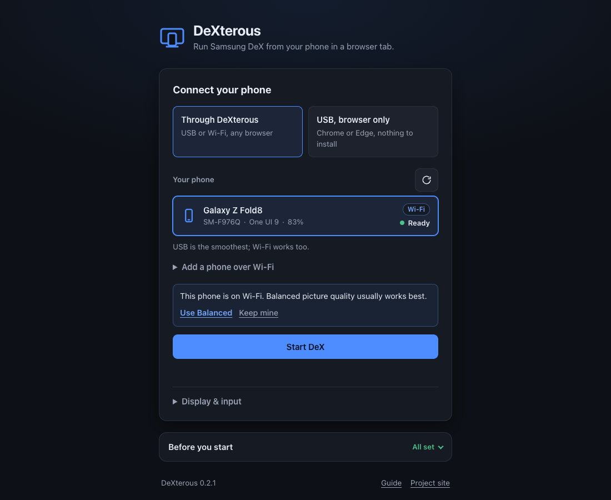

DeX for your Galaxy, anytime and anywhere
Plug in your phone, run one command, and DeX opens in your browser.
npm install -g @subsneaker/dexterous
dexterousnpx @subsneaker/dexterous@latestDeX on
Get started
-
Turn on USB debugging
In Settings › About phone › Software information, tap Build number seven times. Then switch on USB debugging in Developer options.
-
Run
dexterousPlug in your phone and run the command. Tap Allow when the phone asks.
-

Press Start DeX
Pick your phone and DeX fills the tab. Close the tab and your apps move back to the phone.
- Open it from any device on your network with
dexterous --lan(guide). - No Node.js? Try the browser-only version in Chrome or Edge, over USB.
What you get
-
Windows and a taskbar
Move, resize and snap apps on a desktop that fits your tab.
-
Keyboard, mouse and touch
Shortcuts and right-click work, and ⌘ acts as Ctrl on a Mac.
-
Your phone keeps working
DeX gets its own screen, so calls and apps keep working on the phone.
-
Sound and clipboard
Phone audio plays in the tab, and copy and paste work both ways.
-
Smooth video
Hardware decoding at up to 120 frames a second.
-
Locks with the phone
Lock your phone and DeX stays covered until you unlock it.
What you need
- A Galaxy phone or tablet
- One UI 8 or newer
- Node.js
- 22.18 or newer
- adb
- Android platform-tools
- A browser
- Chrome, Edge, Opera, Safari 17+ or Firefox 130+
macOS
brew install node
brew install --cask android-platform-toolsNo Homebrew? Get Node.js and platform-tools directly.
Windows
winget install OpenJS.NodeJS.LTS
winget install Google.PlatformToolsThen open a new terminal.
Linux
sudo apt install android-tools-adbFedora: sudo dnf install android-tools. Arch: sudo pacman -S android-tools. Get Node.js 22.18+ from nodejs.org.
Questions
Is it safe?
DeXterous only listens on your own computer unless you start it with --lan. The one thing it sends out is a daily check with npm for a newer version, which you can turn off.
Do I need root or an app on the phone?
No. USB debugging is all it needs.
Which phones work?
Galaxy phones and tablets on One UI 8 or newer. Older versions can't run DeX on a virtual screen.
Does it work over Wi-Fi?
Yes. Turn on Wireless debugging on the phone, then choose Add a phone over Wi-Fi in DeXterous. USB is smoother.
Something isn't working. Where do I look?
See the guide's troubleshooting section, or open an issue.